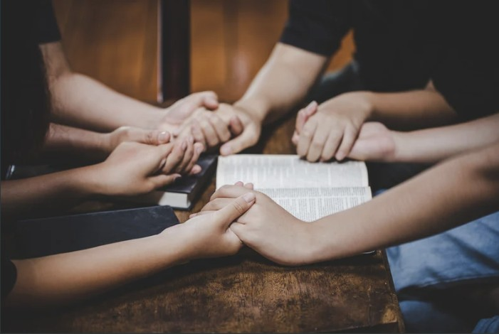
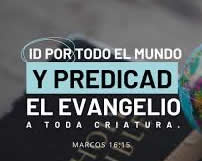
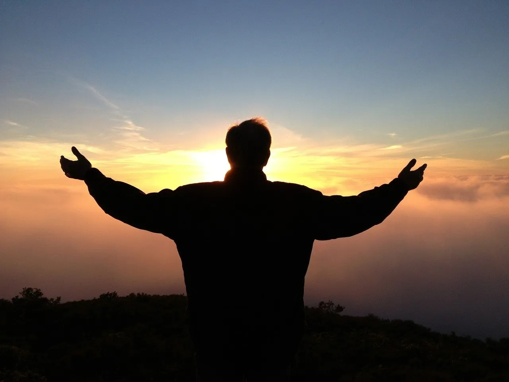
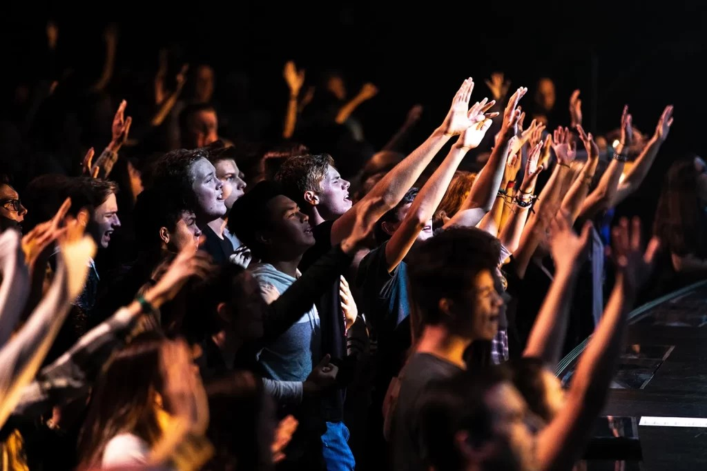

UN CAMBIO REAL
En un mundo donde muchos jóvenes se sienten perdidos, vacíos y atrapados en luchas que parecen no tener salida, nace Un Cambio Real. Este no es solo un ministerio más, es un refugio espiritual donde los corazones cansados pueden encontrar descanso verdadero en la presencia de Dios.
Aquí creemos firmemente que no importa cuán lejos hayas llegado, cuántos errores hayas cometido o qué tan roto te sientas… con Dios siempre hay esperanza. Nuestro deseo es acompañarte en tu proceso, guiarte con amor y mostrarte que una vida diferente sí es posible. No se trata de religión ni de apariencias, se trata de una relación real con Jesús que transforma desde adentro hacia afuera.
En Un Cambio Real encontrarás un espacio seguro para crecer, para sanar, para enamorarte de Dios y para descubrir el propósito que Él tiene para tu vida. Ya sea que estés buscando respuestas, necesites ser consolado, o simplemente quieras acercarte más a Dios, este es tu lugar.
ACONTINUACION, tendras un listado en donde podras directamente los temas que tratamos
-
que es un cambio real?nuestros valorespara quien es un cambio real?nuestra vision
1. Nuestra Misión
Nuestra misión con este ministerio es simple pero profunda: crear jóvenes conforme al corazón de Dios. Buscamos formar no solo creyentes, sino personas que realmente anhelen una relación íntima y diaria con el Señor. Inspirados en Hebreos 10:22, queremos que los jóvenes se acerquen a Dios con corazón sincero y con plena seguridad de fe. Queremos despertar en cada joven esa necesidad real de Dios, que no sea solo una costumbre ir a la iglesia, sino que sientan un hambre genuina por su presencia. Deseamos que cada uno se enamore profundamente de Dios, que lo conozca más allá de las canciones o las predicaciones, y que desarrollen una amistad verdadera con su Creador. Esta misión nos mueve día con día. No nos conformamos con que los jóvenes solo “asistan”, queremos ver vidas completamente entregadas, corazones apasionados y jóvenes dispuestos a vivir para la gloria de Dios en todo momento.

2. Nuestro Propósito
Existimos para compartir el evangelio de Jesucristo, tal como lo dice Marcos 16:15: “Id por todo el mundo y predicad el evangelio a toda criatura”. Aunque actualmente solo seamos dos personas al frente, tenemos una visión grande: que todos los jóvenes conozcan la verdad y puedan ser salvos. Nuestro propósito es que cada joven pueda confesar con su boca que Jesucristo es su único y suficiente Salvador. Queremos que entiendan que no hay otro nombre bajo el cielo en el que puedan ser salvos, y que la salvación es un regalo que solo se recibe por gracia mediante la fe. No descansaremos hasta ver a más jóvenes siendo alcanzados, transformados y enviados. Creemos que aunque seamos pocos, Dios puede usar este ministerio para impactar muchas vidas y expandir su reino en esta generación.
Un Cambio Real significa crear en el joven ese pesar sincero cuando peca contra Dios. No se trata de sentirse mal solo porque alguien lo vio, sino de entender que aunque nadie más lo sepa, Dios sí lo ve. Es desarrollar una conciencia sensible al pecado. Queremos que los jóvenes comprendan que cuando pecamos, no le estamos fallando solamente a las personas, sino principalmente a un Dios santo que nos ama. Esta conciencia nos ayuda a arrepentirnos de corazón y a buscar restauración verdadera. Un Cambio Real también implica aprender a identificar el pecado y cómo evitarlo. No se trata de vivir en perfección, sino de caminar en una vida mejor, más libre y más cerca de Dios, tomando decisiones que honren su nombre cada día.

4- nuestros valores
Nuestros valores se basan en los frutos del Espíritu mencionados en Gálatas 5:22-23. Valoramos profundamente la santidad, vivir separados para Dios y apartados del mal. También la integridad, siendo honestos en todo momento, tanto en público como en lo secreto. Creemos en el amor, no solo de palabras, sino demostrado en acciones. Practicamos la paz, la paciencia y la benignidad, tratando a los demás con la misma gracia que Dios ha tenido con nosotros. Estos valores no son opcionales, son el fundamento de todo lo que hacemos. Queremos que cada joven que forme parte de Un Cambio Real crezca desarrollando estos frutos en su vida diaria, para ser un testimonio vivo del poder transformador de Dios.
5-para quien es "un cambio real"?
Un Cambio Real es para todos aquellos que necesiten ser consolados. Para los que están atravesando por momentos difíciles, para los que sienten que nadie los entiende y cargan con un peso muy grande en su corazón. Es para todos los que necesitan amor verdadero, para aquellos que se sienten solos, rechazados o sin valor. También es para los jóvenes que están tristes, deprimidos, ansiosos o que simplemente sienten un vacío que nada de este mundo ha podido llenar. No importa cuál sea tu pasado, tu situación actual o cuánto hayas caído. Esta es una puerta abierta para todos los que deseen un cambio genuino. Aquí eres bienvenido tal como eres.
6-cual es nuestra vision?
Nuestra visión es ver vidas transformadas y contemplar cuán agradable y perfecta es la voluntad de Dios. Soñamos con ver a una generación de jóvenes viviendo completamente para Cristo, impactando sus familias, escuelas y comunidades. Queremos ser testigos de cómo Dios levanta jóvenes con propósito, con pasión por las almas y con un corazón dispuesto a servir. Anhelamos ver cómo este ministerio crece y se expande más allá de lo que hoy podemos imaginar. En el futuro deseamos ver frutos permanentes: jóvenes que no solo fueron transformados, sino que ahora son instrumentos en las manos de Dios para transformar a otros. Esa es nuestra mayor motivación.
volver a la pagina de inicio